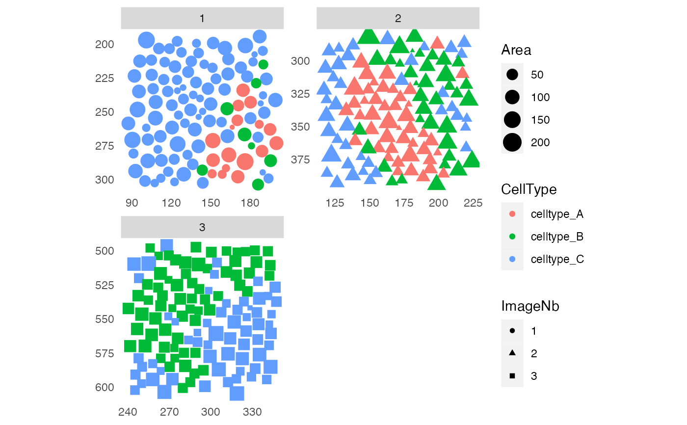

A general function to plot spatial locations of cells while specifying color, shape, size. Cell-cell interactions can be visualized in form of edges between points.
plotSpatial(
object,
img_id,
coords = c("Pos_X", "Pos_Y"),
node_color_by = NULL,
node_shape_by = NULL,
node_size_by = NULL,
node_color_fix = NULL,
node_shape_fix = NULL,
node_size_fix = NULL,
assay_type = NULL,
draw_edges = FALSE,
directed = TRUE,
edge_color_by = NULL,
edge_width_by = NULL,
edge_color_fix = NULL,
edge_width_fix = NULL,
arrow = NULL,
end_cap = NULL,
colPairName = NULL,
nodes_first = TRUE,
ncols = NULL,
nrows = NULL,
scales = "free",
flip_x = FALSE,
flip_y = TRUE
)Arguments
- object
a
SingleCellExperimentorSpatialExperimentobject.- img_id
single character indicating the
colData(object)entry containing the unique image identifiers.- coords
character vector of length 2 specifying the names of the
colData(for aSingleCellExperimentobject) or thespatialCoordsentries indicating the the cells' x and y locations.- node_color_by
single character indicating the
colData(object)entry or marker name by which the nodes (cell locations) should be colored.- node_shape_by
single character indicating the
colData(object)entry by which the shape of the nodes are defined.- node_size_by
single character indicating the
colData(object)entry by which the size of the nodes are defined.- node_color_fix
single character or numeric specifying the color of all nodes.
- node_shape_fix
single numeric or character specifying the shape of all nodes.
- node_size_fix
single numeric specifying the size of all nodes
- assay_type
single character indicating the assay slot from which to extract the expression data when
node_color_byis set to one ofrownames(object).- draw_edges
should cell-cell interactions be drawn as edges between nodes?
- directed
should cell-cell interactions be handled as a directed graph?
- edge_color_by
single character indicating by which to color the edges. See details for more information.
- edge_width_by
single character determining the size of the edges. See details for more information.
- edge_color_fix
single character or numeric specifying the color of all edges.
- edge_width_fix
single numeric specifying the size of all edges.
- arrow
an
arrowobject specifying how to draw arrows between cells.- end_cap
a
geometryobject specifying how long the edges are. This only takes effect when drawing arrows. Default:end_cap = circle(0.1, 'cm')- colPairName
single character specifying the
colPair(object)slot to retrieve the cell-cell pairings.- nodes_first
should the nodes be plotted first and then the edges?
- ncols
number of columns of the grid to arrange individual images.
- nrows
number of rows of the grid to arrange individual images.
- scales
one of
"free","fixed","free_x"or"free_y"indicating if x- and y-axis ranges should be fixed across all images.- flip_x
flip the x-axis?
- flip_y
flip the y-axis?
Value
returns a ggplot object.
Visualizing cell locations and cell-cell interactions
By default, the cells' locations are visualized in form of points (here also
referred to as "nodes") on a 2-dimensional plane. The cells' coordinates are
extracted either from colData(object) slot (for a
SingleCellExperiment input object) or from the
spatialCoords(object) slot (for a SpatialExperiment input
object). Node aesthetics are controlled by setting node_color_by,
node_shape_by and node_size_by for associating the aesthetics
with variables. If node aesthetics should be the same for all nodes,
node_color_fix, node_shape_fix and node_size_fix can
be set.
When draw_edges = TRUE, cell-cell interactions are visualized in form
of edges between nodes. For this, object needs to contain
column pairings in colPair(object, colPairName). Edge color and size
can be set by specifying either an entry in
mcols(colPair(object, colPairName)) (edge attributes) or in
colData(object). In the latter case, edges are colored by attributes
associated to the "from" node. Variable aesthetics can be set using
edge_color_by and edge_width_by. If all edges should have
the same width or color, edge_color_fix and edge_width_fix
can be set.
Arrows for displaying directed graphs can be drawn by supplying a
arrow object. Arrow attributes can be set within this
class. To cap the edge before it reaches the next node, the end_cap
parameter can be used.
See also
buildSpatialGraph for constructing interaction graphs
ggraph for handling graph aesthetics
Examples
library(cytomapper)
data(pancreasSCE)
sce <- buildSpatialGraph(pancreasSCE, img_id = "ImageNb",
type = "knn", k = 3, directed = FALSE)
# Only nodes
plotSpatial(sce, img_id = "ImageNb",
node_color_by = "CellType",
node_shape_by = "ImageNb",
node_size_by = "Area")

# With edges and nodes colored by expression
plotSpatial(sce, img_id = "ImageNb",
node_color_by = "PIN",
assay_type = "exprs",
node_shape_by = "ImageNb",
node_size_by = "Area",
draw_edges = TRUE,
colPairName = "knn_interaction_graph",
edge_color_by = "Pattern")
 # With arrows
plotSpatial(sce, img_id = "ImageNb",
node_color_by = "CellType",
node_shape_by = "ImageNb",
node_size_by = "Area",
draw_edges = TRUE,
colPairName = "knn_interaction_graph",
edge_color_fix = "green",
arrow = grid::arrow(length = grid::unit(0.1, "inch")),
end_cap = ggraph::circle(0.2, "cm"))
# With arrows
plotSpatial(sce, img_id = "ImageNb",
node_color_by = "CellType",
node_shape_by = "ImageNb",
node_size_by = "Area",
draw_edges = TRUE,
colPairName = "knn_interaction_graph",
edge_color_fix = "green",
arrow = grid::arrow(length = grid::unit(0.1, "inch")),
end_cap = ggraph::circle(0.2, "cm"))